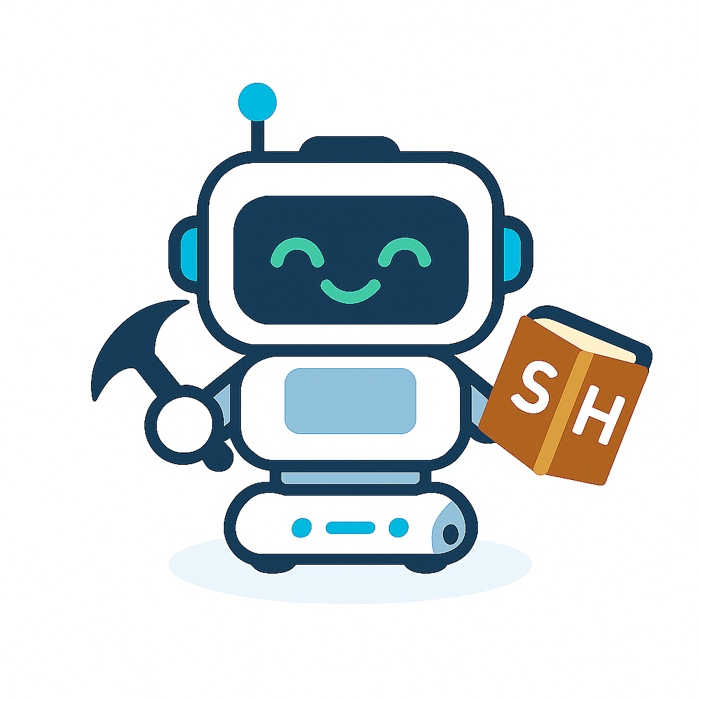

Step1 Toioとつなげる
つなげる
次へ
Step 2: 言語を選んでね
English
Español
Français
次へ
Step 3: コースを選んでね
道案内コース
発音コース
動作と表現
次へ
Step4 レベルを選んでね
かんたん
ふつう
むずかしい
次へ
Step 4: 動作と表現を学ぼう！
使える表現
🎙 Start
⏹ Stop
Step 4: 発音を練習しよう！
以下の単語を声に出して練習してみよう！
🔈 読み上げ
🎙 発音チェック
American English
British English
Australian English
Indian English
Canadian English
Step5 動かしてみよう！
使える表現
🎙 Start
⏹ Stop
⬅️ 戻る
正確性
🎤 聞こえた言葉